B ehind battle-ruined houses, the blue sky tumbles down. Useless stairs on the sides of buildings have led nowhere for 30 years now. On the road skirting the shores of Lake Perućac, on the border between Bosnia and Herzegovina and Serbia, all is quiet, apart from the birdsong. A few families picnic on the banks, grilling fish they have caught from the artificially created waters.
There were 238 bodies dumped in the lake on this former frontline; dredged up after the Srebrenica genocide. Softened by the gauze of net curtains, the panoramic view of Lake Perućac from Šehra’s living-room window appears like staged scenery. Tourists who once frequented the picturesque Drina national park no longer come. The restaurants and pontoons have rotted away. The only water-skiers to be seen are on the far, now foreign, shore.
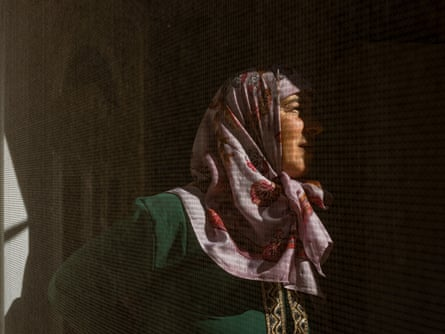Šehra finds solace in gardening on her small plot of land. She says every day is lonely.
For Šehra, 59, the vista and her memories are stark. Memories of evading death in the valleys in 1995, when she was 29. Šehra is among the few Bosnian Muslims who have returned to the Srebrenica area in the last 30 years. Reclaiming her bucolic home was in part a way for her to escape the haunting whispers of sexual violence that she says may explain, but not excuse, why her ex-husband turned his back on his two young daughters after the war. For many women, the talk and the trauma of rape continue to be felt as a dishonour long after the genocide. Some, like Šehra, feel they have been forsaken. “There are days I want to kill myself but I have my prayer. At least God helps me.”
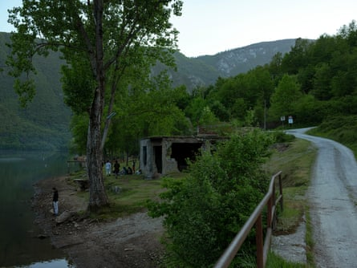The shoreline of Lake Perućac, an artificial lake on the River Drina. Villages along this former frontline were emptied during the Srebrenica genocide.
Around the lake, a turning track lined with picket-fenced pastures leads up to the hamlet of Urisići. Scorched and emptied during the war, the 70 households now number no more than 11. As in other depopulated towns and villages of the Srebrenica municipality, abandoned houses are draped with ivy or lost to the trees, hiding stories of past lives.
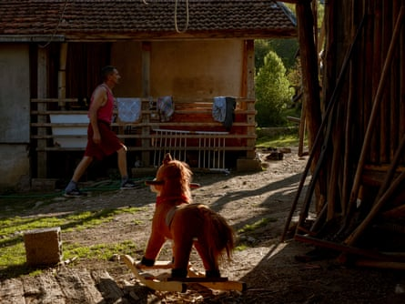Fahrudin, 50, was a teenager when war came to his village. ‘I survived genocide.’
With approximately 10,000 people killed and systematic ethnic cleansing hollowing out almost the entire municipality, most former inhabitants have remained abroad as refugees, or live in other regions of Bosnia to which they were displaced. Bosniaks (Bosnian Muslims), who made up three-quarters of the population before the war, are now the minority. Many of those who have come back feel unsafe, triggered by a pervasive climate of fear amid ever emboldened Slavic nationalism.
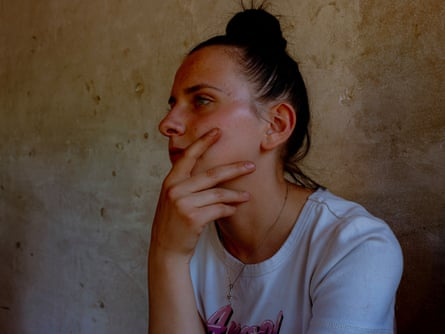Nizama’s family returned to their farm in Urisići, a remote village in the mountains. For her, life is tough.
Her hair scraped into a bun, wearing a T-shirt with the word Angel spelled out in pink letters, Nizama looks up into a glaring sun and lets out a deep sigh. “What in God’s name did I do to be here?” Sitting on the veranda, the 18-year-old is surrounded by a collection of outbuildings, chicken coops and cowsheds. There’s a bright fur rocking horse and a plastic chainsaw for her nephew, Daoud, the only child to be born in Urisići since the war.
It has taken 30 years for the Šoljić family to resettle on their remote farmstead; a span of time that equates to a generation. Nizama’s father, Fahrudin, was himself 18 when he last set foot here. A wound sustained when he was captured runs down the length of one arm. “I survived the last war,” he says. “I survived a concentration camp and I survived genocide.” Having raised his two daughters, Nizama and Minela, in a rented flat near Sarajevo, the homecoming was, for Fahrudin, much longed for. “It’s my land. My house and my right to return.” The move has been tougher for his family. Minela says they are often referred to as refugees. Despite returning to their ancestral land, it is a slander that implies they will never properly belong.
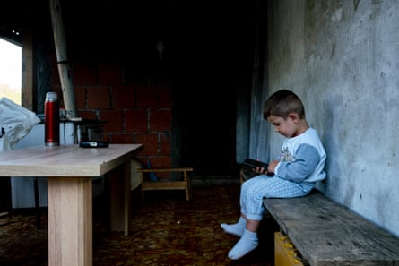Daoud sits on a makeshift bench on the veranda, flicking between cartoons on a smartphone. His mother, Minela, arrived for the first time recently, having grown up displaced in a town just north of Sarajevo.
With few opportunities, Nizama has enrolled at the nearest school, 25 miles away, to study hairdressing. “I wake up at 4am to get to Srebrenica [town]. From the bridge below it’s one hour by minibus, then I have to take another bus from the main road. When I get back in the afternoon, I have to help with the sheep, the cows and the chickens.”
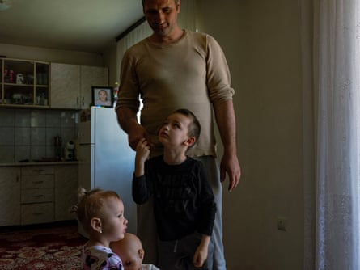Elmin holds on to his father, Elvir, as two-year-old Emina plays with her doll.
Bouncing on a netted trampoline, Elmin, six, shrieks his way through a Sunday afternoon. Up on the balcony, Elmina leans on a washing line, ignoring the scraping feet of an unclothed doll dragged along by her little sister, Emina. From behind glass sliding doors, the three siblings are secretly watched over. Their parents, Elvir and Amina, exchange affectionate looks. Across Srebrenica, families with young children are few and scattered.
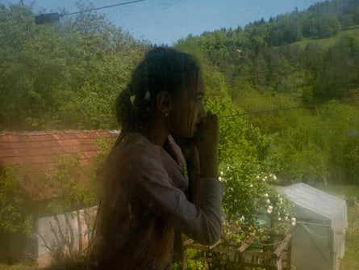Elmina leans on the washing line, gazing out across the forests and fields of Milići.
Endeavouring to find their footing in their riverside cottage in Milići after years spent sheltering in Kosovo, Elvir and Amina still feel utterly disconnected. “There has always been so much fear here but for the parents, it’s even worse.” The Bosnian Serb curriculum omits the genocide, and most schools in Srebrenica reflect a culture of denialism that has gone mainstream.
Leading the charge, the ultranationalist president of Republika Srpska, Milorad Dodik, proclaimed that not only had Srebrenica not been an act of genocide , but that the number of victims was greatly exaggerated. Revisionist histories, along with Dodik’s seccessionist aims, have further fuelled segregation. Elvir and Amina are reluctantly sending their oldest children across the inter-entity boundary line , 19 miles away, to an all-Muslim school. It is the safest option. Elvir often thinks back to his own boyhood and the education he missed out on, having been forcibly expelled from his village. He recalls the random shootings, having to hide in the forests, witnessing violent suicides and seeing arms tied together with wire, dismembered on the road. Memories that have evolved to become uneasy bedtime stories, passed on to his own children in the dark.
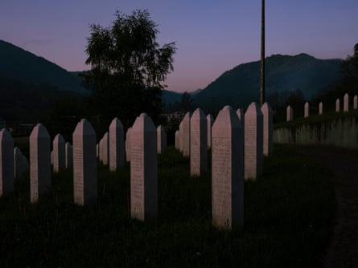Row upon row of simple white gravestones mark the remains of some of the 8,300 largely Muslim genocide victims.
As the mists roll back at dawn, the glow of a neon heart reveals itself from within the forests above, marking the site of a massacre. Beneath the streetlights, a patrol car parks up at the gates of the cemetery in Potočari. On 11 July 1995, the village set the scene for what was to be the largest mass killing in Europe since the second world war. That afternoon, as nearby Srebrenica town – the world’s first UN-designated “safe area ” – was besieged by Bosnian Serb forces, some 30,000 men, women and children fled the town. In fear of their lives, the Muslim population sought protection within the UN compound 7 miles north at Potočari. But abandoned by Dutch peacekeeping forces , their fate was sealed. The genocide played out over the next three days in locations close to Potočari, with many of the atrocities taking place on the road out of Srebrenica as a column of mostly men and boys tried to escape. Thirty years on, the open space of neat cut grass and wire fences at Potočari makes up the Srebrenica memorial centre.
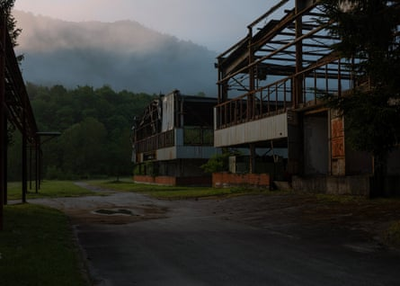The former headquarters of the Dutch UN peacekeeping forces lies in ruins, overgrown with vegetation.
At the hulking shell of a former battery factory that housed Dutch UN peacekeepers, time has seemingly stood still. Amid rusting machinery, Dutch graffiti still covers the walls. Signs for toilets, painted insignia and renderings of semi-naked women are interspersed with graffiti that speaks of a disdain for the people the soldiers were deployed to safeguard.
Renovated buildings now house a visitor centre and museum that exists as “a permanent reminder of the responsibility and failure of the United Nations and the international community to prevent genocide”. Inside one room, a group of four men in their early 50s, heads shaved and wearing beige fatigues, stand close-mouthed. They are veterans accompanied by a Dutch delegation. Arriving to take them on a tour, one of the bereaved Mothers of Srebrenica composes herself. Taking a deep breath before going inside, she tries to shrug off the inherent pangs of animosity felt towards her guests. “They have no shame!”
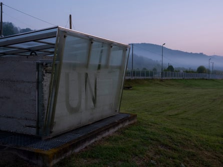The old battery factory that served as a base for Dutch UN peacekeeping forces in Potočari, where a concrete slab painted with the letters UN is encased in glass.
Across the road, in sloping fields, row upon row of simple white headstones marks the remains of some of the 8,372 largely men and boys who were massacred. By mid-morning, busloads of children arrive at the cemetery complex. Such school trips have become a near rite of passage for younger generations in Bosnia; an effort to reverse the ethnic cleansing to which the site bears witness.
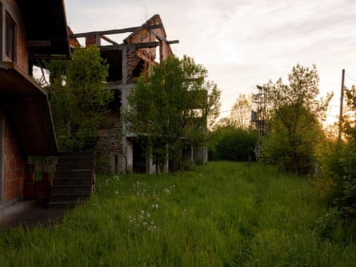Referred to locally as the death house, an execution site on the main Bratunac road stands gutted, riddled with bullet holes.
Travelling in and out of Srebrenica, the aptly named road of death is lined with the sites of former graves and executions: hidden waymarks that, like mute buttons, pause conversations on bus and car journeys.
On the edge of the main market town of Bratunac, Tifa lives less than 200 metres from a mass grave . Taking a sip of homemade raspberry juice, she glances over. “My uncle is in there.” Bordering a small, grassy plot of land, the scene of her uncle’s murder at the onset of the war is marked with a modest raised plaque. A simple engraving reads “ masovna grobnica ” – mass grave. Like her own semi-urban home, it is overlooked by two- and three-storey red-brick houses. Most are empty now, left in haste or boarded up with sheets of plywood. Tifa points to one belonging to the convicted war criminal Momir Nikolić . A deputy commander for security and intelligence in the Bosnian Serb army, Nikolić was at the centre of the crimes that took place in 1992 and after the fall of Srebrenica.
Tifa knows all her neighbours. Few ever hid their complicity in crimes that included her own capture when, at 17, she was forcibly interned in a nearby football stadium. “They are really bothered that we came back. They don’t want us Muslims here. Some will say good morning, but we know who they are and what they did.” Separated from her family in the camp, Tifa went on to lose her fiancé, Vekaz, and her father, Mehmed, in the genocide. “Sometimes I want to forget but I can’t. I don’t imagine I ever will,” she says. “I have a fear of history repeating itself. If it does, I will never leave here. I love my house because my father built it, and importantly we need to reclaim what is ours. In a way, it’s a means to confront the Serbs and not let them win again. We need to end the era that began in 1992.”
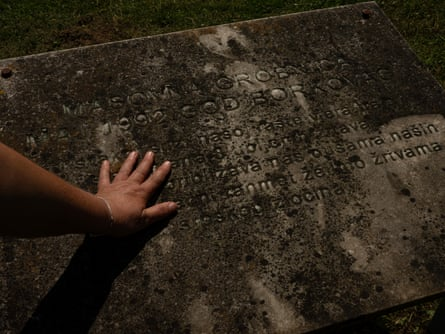Tifa lives less than 200 metres away from a mass grave. ‘My uncle is in there.’
This year, on 11 July – the anniversary of the genocide, designated by the UN as the international day of reflection and commemoration – Tifa will join tens of thousands of bereaved families at the cemetery in Potočari. During this annual act of remembrance and prayer, friends and relatives come together.
The very act of gathering to remember in Potočari does not come without risks. In the past, police have found bombs planted around the memorial centre and in March this year the centre was forced to temporarily close .
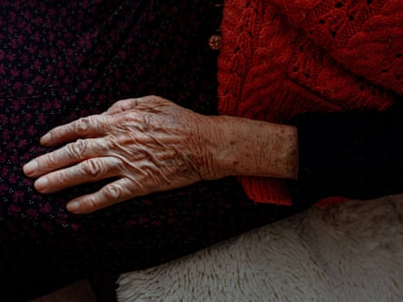Now living on the same site as the camp to which she fled in Srebrenik, Ajkuna rarely leaves her house.
In coarse slipper socks and a buttoned-up wool waistcoat, Ajkuna, 84, sits neatly upright, her hands on her lap. The clothes that she knits herself and occasionally sells are, like the herbs she collects in the woods, a therapeutic distraction for her. Trays of daisies, mint, linden and chamomile are laid out in her kitchen beside a serving bowl packed full of medicines. There is little else to ease her mind.
There are many women who, too old, too sick or too anguished, will not make it to the memorial in Potočari this year. A cold dread has kept Ajkuna away for three decades. The jaunts taken with her daughter-in-law, Mejra, to go foraging are the only times she leaves her house these days. “When I see young people outside I start screaming because I don’t have my own. I don’t know how to go on living without the children I lost. It makes me want to die in a bad way.”
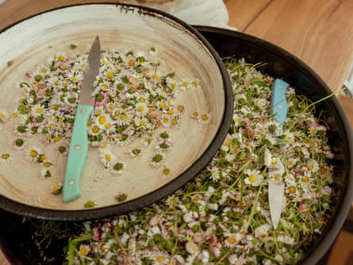‘For 20 years I’ve collected wild herbs and flowers from the forests and mountainsides. Anything that helps with health – mint and linden, daisies and chamomile for tea.’
On 12 July 1995, Ajkuna’s five boys were murdered in Srebrenica, shot dead in the woods as they tried to run away. The body of her husband, Asim, was found in a mass grave. Still grieving their loss, Ajkuna relives the ordeal of her own escape from death every day.
“I remember the screaming of the children and the mothers trying to keep them calm while crying themselves. All day from early morning until night we were on those buses and every time we stopped, we thought that was the time when they would kill us. The Serbs would start shooting, shouting: ‘Fuck you all! Fuck all your Muslim mothers! We will kill all of you!’ The soldiers would reveal themselves, threatening rape … We saw men being led away with their hands tied behind their backs.
“In Kravica they stopped the bus and when we came out they took people, shooting, into the woods. At each checkpoint the separation of families would begin again and each time we thought our time had come.”
Ajkuna rarely sleeps. “At night I scream in bed and Mejra asks me if I need another pill.”